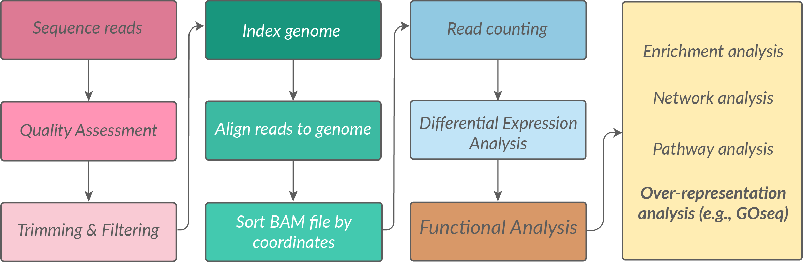
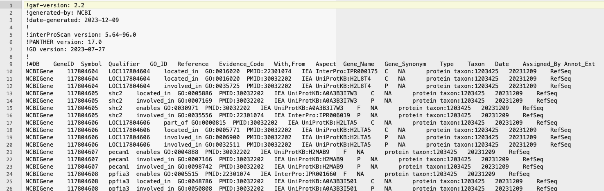
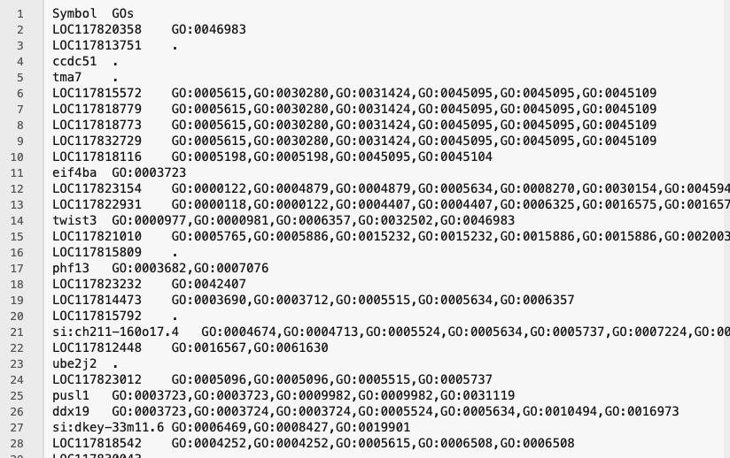
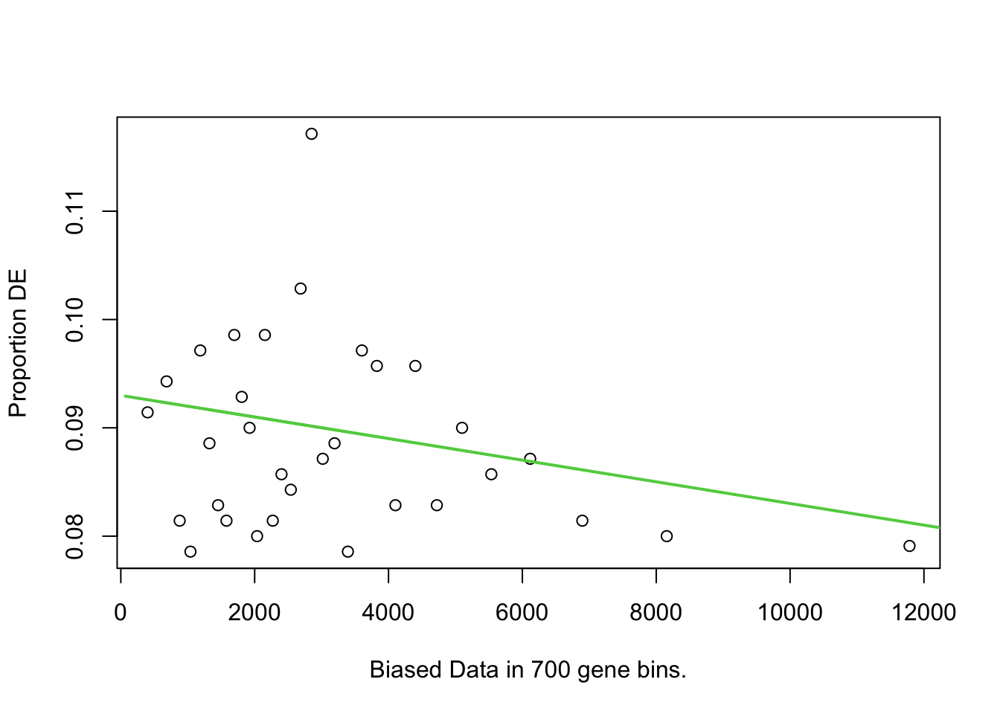
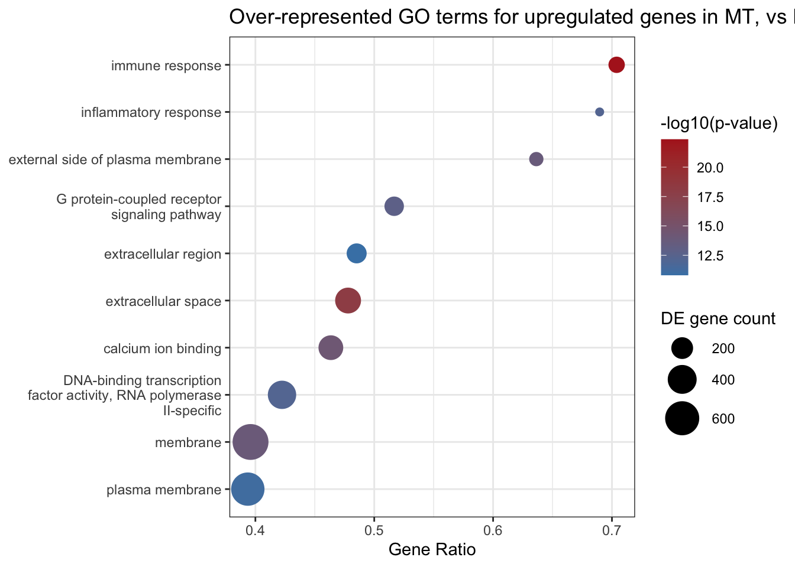
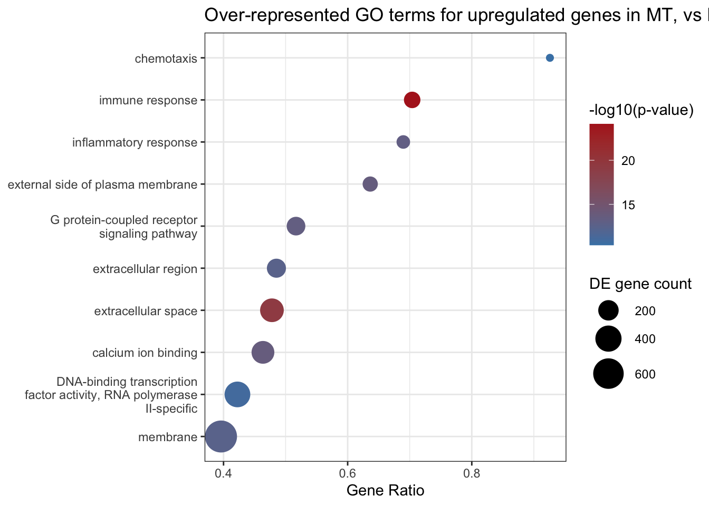
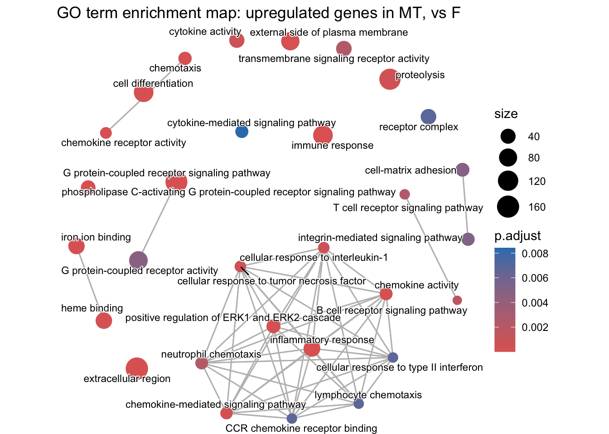

# From CRAN
install.packages("tidyverse")
install.packages("BiocManager")
# From Bioconductor
BiocManager::install("goseq")
# Load libraries
library(tidyverse)
library(goseq)Mini series: Gene ontology analysis for non-model organisms
In this workshop, we will cover how to perform gene ontology (GO) analysis for non-model organisms. Specifically, we will run through GOseq analysis in R, focusing on how to perform this for organisms that are not in the supported organisms list in goseq() and don’t have an annotation package in Bioconductor.
This is an extension on our RNA-seq workshop, which covers GOseq analysis using the supported organism Saccharomyces cerevisiae (RNAseq workshop link here).
Prerequisites
- Have attended our Introduction to R workshop or have equivalent experience.
- Have attended our RNA-seq Data Analysis workshop, or have previous experience with an RNA-seq workflow.
Set-up
R libraries needed for this workshop:
Background
We start off our pipeline at the end of the RNAseq read processing steps, but at the beginning of our gene expression analysis journey. An exciting place to be!
In this scenario, we have already:
- Sequenced our samples
- Trimmed, filtered, aligned our reads to a genome
- Produced a count matrix of read counts per gene per sample
- Performed differential expression analysis to identify differentially expressed genes (DEGs)
- Have a list of DEGs that we want to understand the biological significance of using gene ontology (GO) analysis.

What are gene ontologies (GO) and what is GO analysis?
Gene ontologies are a structured and standardised representation of biological knowledge. The GO is designed to be species-agnostic to enable the annotation of gene products across the entire tree of life. GOs are organised in three aspects: Molecular Function (MF), Cellular Component (CC), and Biological Process (BP). Read more about GOs on the geneontology.org website.
GOseq analysis (paper here) is a powerful tool used to understand the biological significance of a list of genes, such as differentially expressed genes (DEGs) from an RNA-seq experiment. GO analysis helps to identify which biological processes, cellular components, or molecular functions are enriched in a given gene list. GOseq works by testing which GOs are overrepresented in a gene set compared to a background set of genes. GOseq is one type of overrepresentation analysis tool, but there are other tools such as GSEA which use a different statistical approach i.e., functional class sorting, rather than the hypergeometric testing done in GOseq. There are pros and cons to every approach.
What objects/files do I need to perform GOseq?
To perform GOseq, you typically need the following files or objects in R:
- DE gene lists: Character vectors of all the differentially expressed gene (DEGs) IDs to be tested. For each pairwise comparison, make two character vectors: one for upregulated genes and one for downregulated genes.
- Background genes: A character vector of the background gene list.
- Gene ontologies: A dataframe that maps gene identifiers to GO terms.
- Gene lengths: A dataframe that maps gene identifiers to gene lengths.
The gene IDs used may be a gene symbol or another identifier such as Ensembl ID, but it should be the same identifier used in every file or object above, as they need to cross-match. If you are working outside of R to generate these objects above, save them as either tab delimited text files (for reading into R as a dataframe) or as a plain text file with each gene identifier on a new line (for reading into R as a character vector).
What do each of these objects/files look like?
… and how do we get them?
1. DE gene lists.
📌💡 Make character vectors of your upregulated gene IDs and downregulated gene IDs, for each pairwise comparison.
Since we are working in R, you likely will be pulling this data directly from your DGE results e.g., the dds object created during DESeq2 analysis.
We are not focussing here on how to run DESeq2, see our RNA-seq data analysis workflow for this.
Code used to generate dds object
Counts and coldata files not supplied in this workshop.
library(DESeq2)
library(tidyverse)
# >> DGE-related variables ----
COUNTS_FILE = "data-files/readspergene_v2.matrix"
COLDATA_FILE = "data-files/coldata_v2.3.2.txt"
# Specify significance threshold
SIGNIFICANCE_CUTOFF = 0.001
# >> Counts file ----
counts.table = read.table(file=COUNTS_FILE, header = TRUE, sep = "\t", stringsAsFactors = FALSE, row.names = "GeneID")
# >> Coldata file ----
coldata.table = read.table(file=COLDATA_FILE, header = TRUE, sep = "\t", stringsAsFactors = FALSE, row.names = "sample")
#factorise
coldata.table$histov22 <- factor(coldata.table$histov22, levels=c("F","ET","MT","LT","TPM","IPM"))
# Create a DESeq2 object for pairwise comparisons
dds <- DESeqDataSetFromMatrix(countData = counts.table, colData = coldata.table, design = ~ histov22 )
dds <- estimateSizeFactors(dds)
# Drop low count genes
nc <- counts(dds, normalized=TRUE)
filter <- rowSums(nc >= 10) >= 2
dds <- dds[filter,]
# Run DESeq2
dds <- DESeq(dds)
res <- results(dds, alpha=SIGNIFICANCE_CUTOFF)
res <- res[order(res$padj),]
res <- na.omit(res)
# Extract pairwise comparison results
comparisons = c("histov22_MT_vs_F")
# Initialise lists to store results
results_list <- list()
de_results_list <- list()
for (c in comparisons)
{
# Extract relevant details from comparison
cSplit <- strsplit(c, "_")
contrast <- cSplit[[1]][1]
group1 <- cSplit[[1]][2]
group2 <- cSplit[[1]][4]
# Obtain pairwise comparison of interest
res.pw <- results(dds, alpha = SIGNIFICANCE_CUTOFF, contrast = c(contrast, group1, group2))
# Clean up
res.pw <- res.pw[order(res.pw$padj), ]
res.pw <- na.omit(res.pw)
# Convert to data frame and store full results
results_list[[c]] <- as.data.frame(res.pw)
# Get DE genes and store
de_results_list[[c]] <- as.data.frame(res.pw[res.pw$padj < SIGNIFICANCE_CUTOFF, ])
}
# pull out into individual named objects - just one for this example!
df_MT <- de_results_list[["histov22_MT_vs_F"]]
# split up and down
dfMT_UP <- df_MT[df_MT$log2FoldChange > 0 ,]
dfMT_DOWN <- df_MT[df_MT$log2FoldChange < 0 ,]
#test - should be true
nrow(dfMT_UP) + nrow(dfMT_DOWN) == nrow(df_MT)[1] TRUE# gene list objects as character vectors
genes_MT_UP <- rownames(dfMT_UP)
genes_MT_DOWN <- rownames(dfMT_DOWN)No matter how you get there, in the end you want two lists of DE genes for each pairwise comparison, stored in R as character vectors.
You should have one list of upregulated genes and one list of downregulated genes, for each pairwise comparison.
In the example below, the two objects we are using are from a pairwise comparison between female (F) gonads and mid-transitioning (MT) gonads from a sex-changing fish species Notolabrus celidotus (New Zealand spotty wrasse).
The objects should look like this when you run the str() function on them:
str(genes_MT_UP) chr [1:6843] "calml4a" "smc1b" "LOC117830393" "gtpbp2a" "LOC117829015" ...str(genes_MT_DOWN) chr [1:1974] "sh3rf1" "cluha" "nr2f6a" "disp1" "mtus1a" "ddx42" "ciz1a" ...2. Background genes:
📌💡 Make a character vector of all gene IDs that you want to use as a background for your GO analysis.
You need to think carefully about what you want to use as your background gene list. Generating it is fairly straight forward, but it has implications for the analysis. Read more on how overrepresentation analysis works and how the background gene list is used in the analysis here in the functional analysis section of the RNA-seq workshop.
For now, we will use all genes that are expressed in our dataset as the background. We will take these gene IDs by pulling all the rownames out of the dds object:
Note: earlier when dds was created, low count genes were filtered out, which removed genes not expressed (i.e., zero counts across all samples) and genes very lowly expressed (i.e., less than 10 counts in at least 2 samples).
background <- rownames(dds)
str(background) chr [1:22231] "LOC117813751" "ccdc51" "tma7" "LOC117815572" "LOC117818779" ...
Checks and food for thought
What does expressed really mean in this context? If one of our genes in our dataset had one read mapping to it in one sample, and all other samples had zero, would you consider this an expressed gene? Most of us probably would agree this does not seem sufficient. Deciding on a read count threshold is up to you as a researcher. In this example above, we used a threshold of 10 counts in at least 2 samples. So in this way, our background of expressed genes will be less than the total number of genes in the genome, but more than the number of DE genes.
We can confirm that there are less genes in the background then there are in the whole list of genes in the genome by running:
length(background)[1] 22231nrow(counts.table)[1] 282613. Gene ontologies
📌💡 Make either a dataframe or a tab delimited text file with two columns that maps gene identifiers to GO terms.
The gene identifier should match the same identifiers used in the DGE list and background genes. This file should contain every gene in your genome; we filter out the genes we want for analysis later. Multiple GO terms for a single gene are separated by commas and genes with no GO term should have a . You should have an entry for every gene in your genome (or more specifically, every gene for which reads can be mapped in your RNA-seq alignment i.e., every gene represented in your count matrix). Whether you have a tab delimited text file or a dataframe in R, it should look something like this:
GeneID GOs
LOC117820358 GO:0046983
LOC117813751 .
ccdc51 .
tma7 .
LOC117815572 GO:0005615,GO:0030280,GO:0031424,GO:0045095,GO:0045109
pusl1 GO:0003723,GO:0003723,GO:0009982,GO:0009982,GO:0031119
ddx19 GO:0003723,GO:0003724,GO:0003724,GO:0005524,GO:0005634,GO:0010494,GO:0016973
cdab GO:0004126,GO:0004126,GO:0005829,GO:0008270,GO:0008270,GO:0009972,GO:0009972
LOC117818116 GO:0005198,GO:0005198,GO:0045095,GO:0045104
... ...If your data is a text file, you should read it into R as a dataframe. The first row should be the header. read_tsv() from readr by default treats the first row as the header. If you use read_delim from utils you can specify header is true (or false if you have no header) and the separator is tab (or alternate delimiter).
Example code:
geneOntologies <- read_tsv("geneOntologies.txt")
geneOntologies <- read.delim("geneOntologies.txt", header = TRUE, sep = "\t")
How do I get gene ontologies?
Option 1 (easier): Download the .gaf file from the genome release for your organism and re-arrange into the required format.
This will likely come from NCBI’s FTP database https://ftp.ncbi.nlm.nih.gov/.
See the Gene Ontology website for more information about getting GO annotations https://geneontology.org/docs/download-go-annotations/
The gaf file looks like this. You will need to take the ‘Symbol’ column and the ‘GO_ID’ column to make your gene ontology file. You will also need to collapse multiple GO terms for a single gene into a single cell, separated by commas. Genes with no GO term should have a .

The final gene ontology file should look like this (tsv format):

Option 2 (harder): Derive GOs from BLAST and Pfam annotations. This is more work, but may be necessary if you don’t have a .gaf file available for your organism. You can use tools like InterProScan to annotate your genes with GO terms based on their sequence similarity to known proteins. BLAST2GO is another tool (commercial - need a license) that can be used to assign GO terms to genes based on BLAST results (i.e., BLASTing against organisms that do have GO annotations, usually from the evolutionarily nearest model organism!). This approach may be more time-consuming and may not yield as comprehensive GO annotations as using a .gaf file, but it can be a useful alternative for non-model organisms. If you generate Pfam annotations through another pipeline (e.g., through hmmer) you may also need to download the latest PFAM2GO mapping file to retrieve GO terms for your genes based on their Pfam domains.
4. Gene lengths
📌💡 Make either a dataframe or tab delimited text file with two columns that maps gene identifiers to gene lengths (in bp)
The gene identifier should match the identifiers used in the DGE list and background genes. The gene length is in base pairs (bp) and should be whole numbers (no decimal places). You should have an entry for every gene in your genome (or more specifically, every gene for which reads can be mapped in your RNA-seq alignment i.e., every gene represented in your count matrix). Whether you have a tab delimited text file or a dataframe in R, it should look something like this:
GeneID Length
LOC117820358 822
LOC117813751 23247
ccdc51 6138
tma7 6649
LOC117815572 3004
LOC117818779 3782
LOC117818773 4401
LOC117832729 22180
LOC117818116 5860
eif4ba 22986
twist3 6717
... ...If your data is a text file, you should read it into R as a dataframe. The first row should be the header. read_tsv() from readr by default treats the first row as the header. If you use read_delim from utils you can specify header is true (or false if you have no header) and the separator is tab (or alternate delimiter).
Example code:
geneLengths <- read_tsv("geneLengths.txt")
geneLengths <- read.delim("geneLengths.txt", header = TRUE, sep = "\t")
How do I get gene lengths?
Getting gene lengths sounds straightforward, but it depends on how you define the length of a gene — and there are several reasonable definitions that give different answers.
One approach is to use the genomic span of a gene: the distance from the first base to the last base across the gene body. This is easy to extract from a GFF/GTF file but includes introns, which are not actually transcribed into mature mRNA.
A more accurate definition for RNA-seq purposes is the union exon length: the total number of base pairs covered by exons, after merging overlapping exons from different isoforms of the same gene. This better reflects the sequence that reads actually map to.
Ideally, make a file/object that has gene lengths for all genes in your genome – you will filter out the genes you need for analysis later.
Option 1 (easiest): If you used featureCounts to generate read counts, extract the Length column from the output. This column contains the union exon length for each gene (assuming you used -t exon and -g gene_id options when running featureCounts).
Option 2 (easy enough): Use the gene annotation file (e.g., GFF3 or GTF) for your organism, and use a package such as GenomicRanges to extract the union exon length for each gene.
The code for option 2 this should look something like this:
# generate gene lengths from gtf
# BiocManager::install(c("GenomicRanges", "rtracklayer"))
library(GenomicRanges)
library(rtracklayer)
# Import only exon features
exons <- import("data-files/GCF_009762535.1_fNotCel1.pri_genomic.gtf", feature.type = "exon")
exons <- exons[!is.na(exons$gene_id)] # optional
# Split by gene, reduce overlapping exons, sum widths
exons_reduced <- GenomicRanges::reduce(split(exons, exons$gene_id))
geneLengths <- data.frame(
GeneID = names(exons_reduced),
Length = sapply(exons_reduced, function(x) sum(width(x))),
row.names = NULL
)
head(geneLengths) GeneID Length
1 LOC117804603 280
2 LOC117804604 4564
3 LOC117804606 1125
4 LOC117804610 3459
5 LOC117804611 1009
6 LOC117804616 5405Option 3 (de novo assembly): Lastly, if you are doing de novo transcriptome assembly, you may want to use the weighted average length of the assembled transcript as the gene length (and you will need to round this number to the nearest whole number). This approach uses how expressed each isoform is (TPM) to weight how much each isoform length contributes to the calculated average gene length - read more here on the trinity rnaseq wiki.
Running GOseq analysis
First let’s load in and orientate ourselves to our objects. We’ll pull in example data from our Genomics Aotearoa GitHub repository.
# load in all objects
genes_MT_UP <- read_rds("https://raw.githubusercontent.com/GenomicsAotearoa/genomics-mini-series/main/data/genes_MT_UP.rds")
genes_MT_DOWN <- read_rds("https://raw.githubusercontent.com/GenomicsAotearoa/genomics-mini-series/main/data/genes_MT_DOWN.rds")
background <- read_rds("https://raw.githubusercontent.com/GenomicsAotearoa/genomics-mini-series/main/data/background.rds")
geneLengths <- read_rds("https://raw.githubusercontent.com/GenomicsAotearoa/genomics-mini-series/main/data/geneLengths.rds")
geneOntologies <- read_rds("https://raw.githubusercontent.com/GenomicsAotearoa/genomics-mini-series/main/data/geneOntologies.rds")# Orientate yourself to variables
head(genes_MT_UP)
head(genes_MT_DOWN)
head(background)
head(geneLengths)
head(geneOntologies)We need to do some pre-analysis processing. First the gene ontologies need to be reformatted into a list.
# Generate GO mapping structure, final object splitgoannot list ----
geneOntologies[geneOntologies == "."] <- NA #change all dots to NAs
splitgoannot <- strsplit(geneOntologies[,2], split=',')
names(splitgoannot) <- as.vector(geneOntologies[,1])The splitgoannot object is a large list. You can check the structure of it by running str(splitgoannot). The names of the list are the gene IDs, and the values are vectors of GO terms.
Next we need to turn our gene lengths into a named vector.
# Load in gene lengths, final object length.vector is a named vector ----
# note - lengths must be whole numbers, use as.integer(round(genelengths$Length)) if you have decimal places.
length.vector <- setNames(geneLengths$Length, geneLengths$GeneID)
length(length.vector)[1] 28261head(length.vector)LOC117804603 LOC117804604 LOC117804606 LOC117804610 LOC117804611 LOC117804616
280 4564 1125 3459 1009 5405 We will now cull the length.vector to only contain the genes that are in our background gene list. It is best to start with a length vector that contains all genes in the genome; this way if you decide to change your background gene list later, you won’t have to go back and re-generate the original length vector. If you get errors below (or a FALSE in the test), it may be that there are genes in your background gene list that don’t have a length in the length vector. This could happen if you missed genes from the genome when you generated your original length file and would have to go back and check your work.
# Cull length.vector that don't show up in the background gene list.
length.vector <- length.vector[names(length.vector) %in% background]
#test - should be TRUE
length(length.vector) == length(background)[1] TRUEThe last thing we need to do before running GOseq is to generate a named vector of 0s and 1s, where the names are the gene IDs in our background gene list, and the values are 1 if the gene is a DEG and 0 if it is not. We will generate this for both our upregulated and downregulated gene lists.
We’ll start with the upregulated gene list.
# Create a vector identifying which genes are identified as DE in this analysis
DE.vector <- background %in% genes_MT_UP
## test - should be TRUE
## sum counts up how many TRUE are in the DE.vector object, and there should be a TRUE in each position where a gene matched the genes listed in genes_MT_UP
sum(DE.vector) == length(genes_MT_UP)[1] TRUE# Convert TRUE to 1 and FALSE to 0
DE.vector <- DE.vector * 1
## turn the DE.vector into a named vector, where the names are the gene IDs in the background gene list.
names(DE.vector) <- background
## test again- should still be TRUE
sum(DE.vector) == length(genes_MT_UP)[1] TRUE# last test - DE.vector should have the same number of genes as the length.vector now.
length(DE.vector) == length(length.vector) [1] TRUENow we are ready to run the two step GOseq analysis! in the nullp() function, the object DE.vector, used for the DEgenes argument is the same as we’d have made if we ran this analysis using a supported organism, but the bias.data argument differs here (and we also don’t specify which genome and gene ID type we are using, as we would if we were using a supported organism!). The argument gene2cat in goseq() is where we input our custom gene ontology mapping file, which is also different to how we’d run this if we were using a supported organism.
# BiocManager::install("goseq")
library(goseq)
# Run PWF for length bias correction
data.pwf <- nullp(DEgenes=DE.vector, bias.data=length.vector) Warning in pcls(G): initial point very close to some inequality constraints
# Run GOseq
go_output <- goseq(data.pwf, gene2cat = splitgoannot)Processing the GOseq results
The go_output object is a dataframe that contains all the GO terms that were tested, but is not filtered to only show significant results. The columns over_represented_pvalue and under_represented_pvalue contain the p-values for over-representation and under-representation of each GO term, respectively. We can filter the go_output dataframe to only show significant results based on a chosen significance threshold.
In this specific example, we were investigating genes upregulated in mid-transitioning (MT) gonads compared to female gonads (F) and so our output file names reflect this.
# Limit output to significant results
GOSEQ_SIGNIFICANCE_THRESHOLD = 0.05
go_output.SIG.MT_UP <- go_output[go_output$over_represented_pvalue <= GOSEQ_SIGNIFICANCE_THRESHOLD | go_output$under_represented_pvalue <= GOSEQ_SIGNIFICANCE_THRESHOLD,]# Write output to tsv files
write_tsv(go_output, file="MT_UP_vs_F_goseq.tsv")
write_tsv(go_output.SIG.MT_UP, file="MT_UP_vs_F_sig0.05_goseq.tsv")We have run through GOseq now for one comparison, which is MT UP vs F, but we havent looked at genes downregulated in MT (MT DOWN vs F).
Run through the pipeline again for MT DOWN vs F
We have to re-run GOSeq, but some objects we can keep, others we need to remake.
keep background
keep length.vector
keep splitgoannot
remake DE.vector
remake data.pwf
remake go_output
Let’s remove those to be sure we re-create them with our new data!
rm(DE.vector)
rm(data.pwf)
rm(go_output)Run through pipeline again with MT_DOWN
DE.vector <- background %in% genes_MT_DOWN
sum(DE.vector) == length(genes_MT_DOWN) ## test - should be TRUE[1] TRUEDE.vector <- DE.vector * 1
names(DE.vector) <- background
sum(DE.vector) == length(genes_MT_DOWN) ## test again- should still be TRUE[1] TRUElength(DE.vector) == length(length.vector) ## test - should be TRUE[1] TRUEdata.pwf <- nullp(DEgenes=DE.vector, bias.data=length.vector) 
go_output <- goseq(data.pwf, gene2cat = splitgoannot)
go_output.SIG.MT_DOWN <- go_output[go_output$over_represented_pvalue <= GOSEQ_SIGNIFICANCE_THRESHOLD | go_output$under_represented_pvalue <= GOSEQ_SIGNIFICANCE_THRESHOLD,]# Write output to tsv files
write_tsv(go_output, file="MT_DOWN_vs_F_goseq.tsv")
write_tsv(go_output.SIG.MT_DOWN, file="MT_DOWN_vs_F_sig0.05_goseq.tsv")Organise data further into over and underrepresented
Our output above contains results filtered down to only significant results, but it still contains both over-represented and under-represented GO terms, which need to be considered separately.
We should end up with 4 objects or files for each pairwise comparison:
- Upregulated genes - over-represented GO terms
- Upregulated genes - under-represented GO terms
- Downregulated genes - over-represented GO terms
- Downregulated genes - under-represented GO terms
As you can imagine, this can end up being a lot of files if you have many pairwise comparisons!
We’re going to need a new column Gene Ratio for plotting later, so we will generate that now before we split the data into over and under-represented. The Gene Ratio is the number of DE genes in the GO term divided by the total number of genes in that GO term. This is the proportion of DE genes with that GO term e.g., a Gene ratio of 0.5 means that 50% of the genes in that GO term are DE.
For today, we’ll do this for upregulated genes only.
library(dplyr)
go_output.SIG.MT_UP <- go_output.SIG.MT_UP |>
mutate(GeneRatio = numDEInCat / numInCat)Split into over and under-represented GO terms for upregulated genes.
goout_MT_UP_over <- go_output.SIG.MT_UP[go_output.SIG.MT_UP$over_represented_pvalue < GOSEQ_SIGNIFICANCE_THRESHOLD, ]
goout_MT_UP_under <- go_output.SIG.MT_UP[go_output.SIG.MT_UP$under_represented_pvalue < GOSEQ_SIGNIFICANCE_THRESHOLD, ]# test - should be TRUE
nrow(goout_MT_UP_over) + nrow(goout_MT_UP_under) == nrow(go_output.SIG.MT_UP)[1] TRUEThere are often less under-represented GO terms than over-represented; we can check how many GOs are in each df with:
nrow(goout_MT_UP_over)
nrow(goout_MT_UP_under)Plot data
Lastly, let’s create a bubble plot to represent the top 10 over-represented GO terms for upregulated genes in MT vs F. We will use the GeneRatio column we generated above for the x-axis, and we will colour the bubbles by the -log10 of the p-value, which is a common way to visualise p-values in GO analysis. Using a negative log scales very small p-values (most significant) and larger pvalues on a visually more manageable scale, and means that the bigger the number the more significant (here, small p-values become higher numbers and are coloured red). We’ll also scale the size of the bubbles by the number of DE genes in that GO term, so that GO terms with more DE genes are larger bubbles.
goout_MT_UP_over |>
filter(!is.na(ontology)) |>
slice_min(over_represented_pvalue, n = 10) |>
ggplot(aes(x = GeneRatio,
y = reorder(str_wrap(term, width = 35), GeneRatio),
size = numDEInCat,
colour = -log10(over_represented_pvalue))) +
geom_point() +
scale_colour_gradient(low = "steelblue", high = "firebrick",
name = "-log10(p-value)") +
scale_size_continuous(name = "DE gene count", range = c(2, 10)) +
labs(title = "Over-represented GO terms for upregulated genes in MT, vs F",
x = "Gene Ratio", y = NULL) +
theme_bw()
Further plots, next steps and additional resources
There are many other plots you can generate with GO terms. Another simpler option with the objects/data we already have is a barplot of overrepresented GOs vs GeneRatio, in the callout below.
Example barplot of GOs vs GeneRatio
library(ggplot2)
goout_MT_UP_over |>
filter(!is.na(ontology)) |>
slice_min(over_represented_pvalue, n=5) |> #top N by pvalue eg top 10 or 20. Note slice_min = smallest pvalue, slice_max = largest pvalue
ggplot(aes(x = reorder(str_wrap(term, width = 18), GeneRatio),
y = GeneRatio, fill = -log10(over_represented_pvalue))) +
geom_bar(stat = "identity") +
coord_flip() +
scale_fill_gradient(low = "steelblue", high = "firebrick") +
scale_y_continuous(expand = c(0, 0)) + # Removes extra padding
labs(title="Over-represented GO terms for genes upregulated in MT, vs F",x = "GO Term", y = "GeneRatio", fill = "-log10(p-value)") +
theme_classic()
The clusterProfiler package is a great tool for exploring and plotting GO terms too. You will likely need to do some minimal data manipulation/reformatting of the objects we made today to work with clusterProfiler, as shown in the example below. Check out this guide here on different ways to visualise results.
Example GO enrichment map plot
# BiocManager::install(c("clusterProfiler", "enrichplot", "GO.db"))
library(clusterProfiler)
library(enrichplot)
# Step 1: reformat your geneOntologies into long format
# clusterProfiler's enricher() needs a two-column dataframe:
# col 1 = GO term (TERM2GENE format: term first, gene second)
# col 2 = gene ID
# You already have geneOntologies loaded (GeneID | GOs), so we just
# split the comma-separated GOs and pivot to long format.
term2gene <- geneOntologies |>
filter(GOs != ".") |> # drop genes with no annotation
separate_rows(GOs, sep = ",") |> # one row per GO term
mutate(GOs = trimws(GOs)) |> # tidy any whitespace
select(GOs, Symbol) # term first, gene second
# (enricher expects TERM2GENE with term in col 1, gene in col 2)
head(term2gene)# A tibble: 6 × 2
GOs Symbol
<chr> <chr>
1 GO:0046983 LOC117820358
2 GO:0005615 LOC117815572
3 GO:0030280 LOC117815572
4 GO:0031424 LOC117815572
5 GO:0045095 LOC117815572
6 GO:0045095 LOC117815572# Step 2: download and generate term2name variable
# We need the GO term and the name e.g., GO:0000001 and 'mitochondrion inheritance' for plotting
library(GO.db)
term2name <- AnnotationDbi::select(GO.db, keys = keys(GO.db), columns = c("GOID", "TERM"))
term2name <- dplyr::select(term2name, GOID, TERM)
head(term2name) GOID TERM
1 GO:0000001 mitochondrion inheritance
2 GO:0000006 high-affinity zinc transmembrane transporter activity
3 GO:0000007 low-affinity zinc ion transmembrane transporter activity
4 GO:0000009 alpha-1,6-mannosyltransferase activity
5 GO:0000010 heptaprenyl diphosphate synthase activity
6 GO:0000011 vacuole inheritance# Step 3: run enricher()
# universe = your background gene list (same as goseq)
# gene = your DE gene list (same as goseq)
cp_result <- enricher(
gene = genes_MT_UP,
universe = background,
TERM2GENE = term2gene,
TERM2NAME = term2name,
pvalueCutoff = 0.05,
qvalueCutoff = 0.05,
pAdjustMethod = "BH"
)
# Step 4: calculate semantic similarity
# emapplot requires the pairwise similarity between terms to be calculated first. This creates a similarity matrix.
cp_result_sim <- pairwise_termsim(cp_result)
# Step5: Visualisation
emapplot(cp_result_sim,
showCategory = 30, # change how many GOs on plot
size_category = 1, # change size of bubbles
node_label_size = 3, # change GO font size
) +
labs(title = "GO term enrichment map: upregulated genes in MT, vs F")
Next steps 📈
Other analyses you may want to consider is investigating KEGG pathways (example KEGG enrichment analysis workflow here) and weighted gene co-expression network analysis (i.e., WGCNA. Paper here.). Both can be integrated with or utilise GOseq tools. KEGG ontology terms can be used in place of GO terms to perform overrepresentation analysis using the goseq() function. WGCNA can identify lists of genes that co-expressed, and that list can then be used as your input gene list in place of your DGE list for GOseq analysis.
If you really want to use tools designed for supported organisms, it is possible, but not trivial, to make a custom OrgDb for your organism, using one of two available functions from the AnnotationForge package makeOrgPackage() or makeOrgPackageFromNCBI()
Additional resources 📚
- Functional Analysis for RNA-seq by HBC training
- GOseq paper
- GSEA paper
- Further plotting examples using
clusterProfiler. - GOSemSim package for semantic similarity computation.